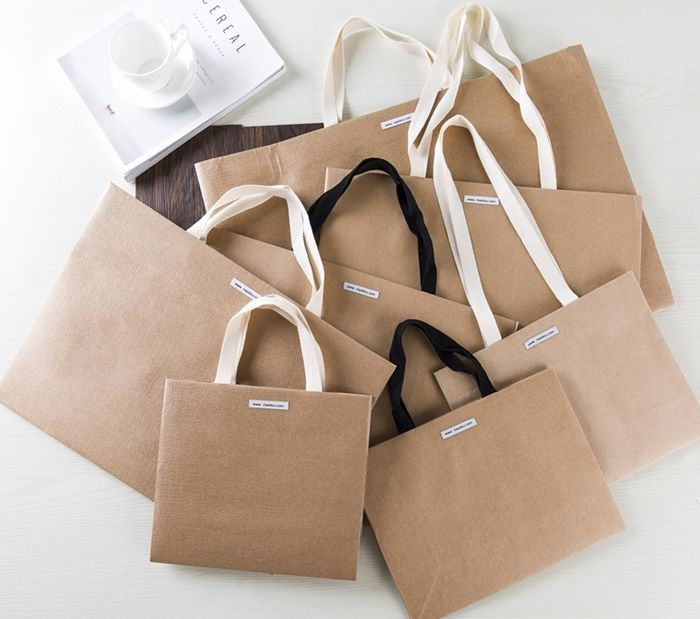
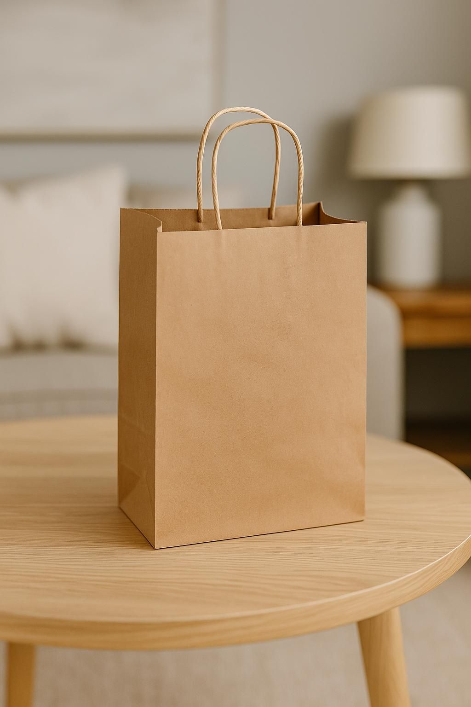
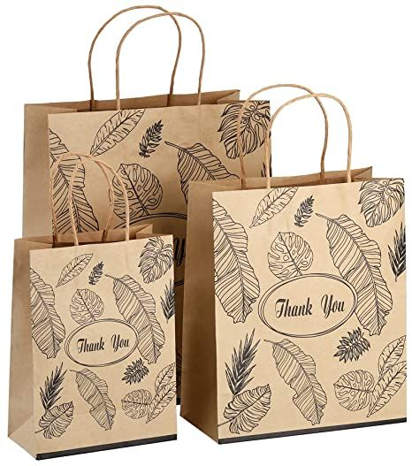
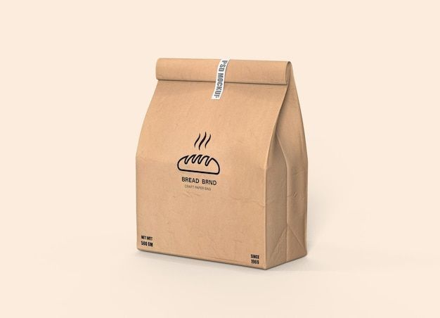
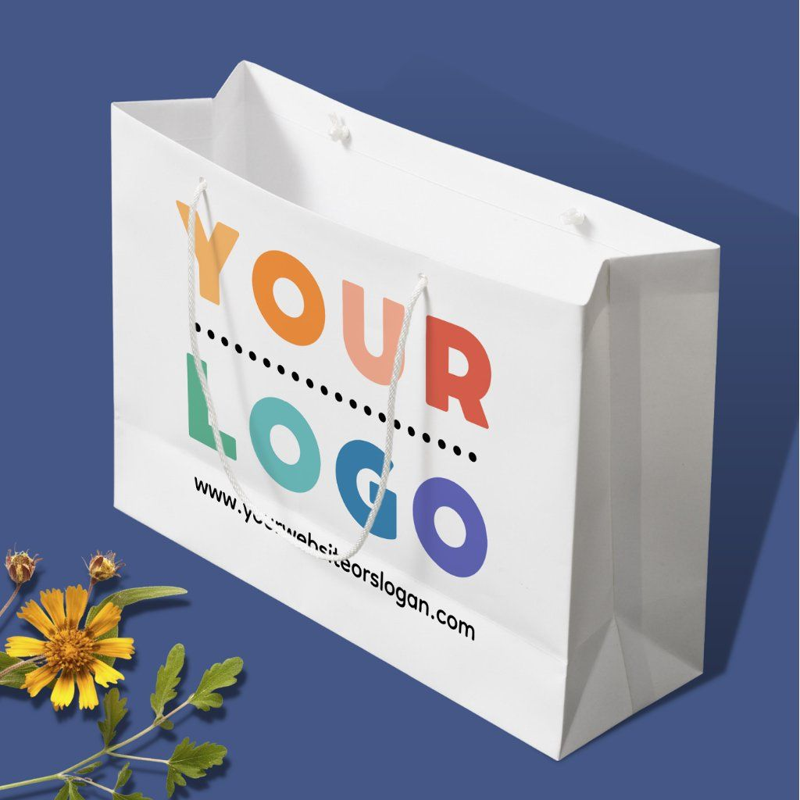
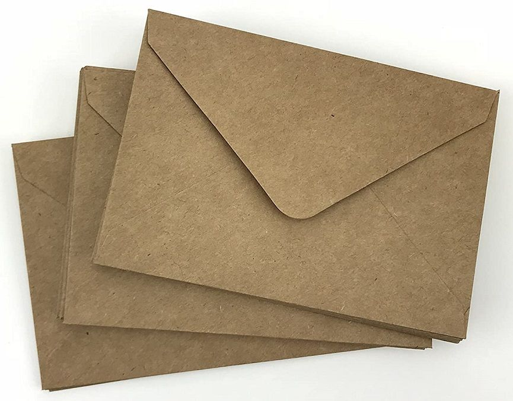
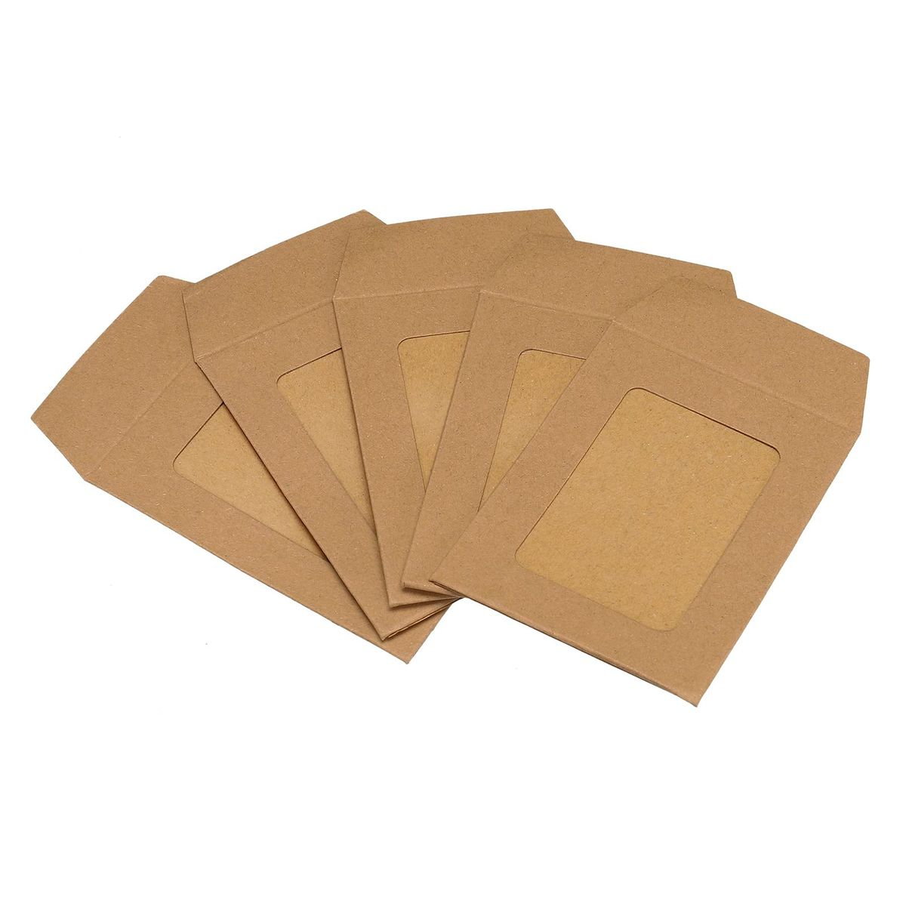
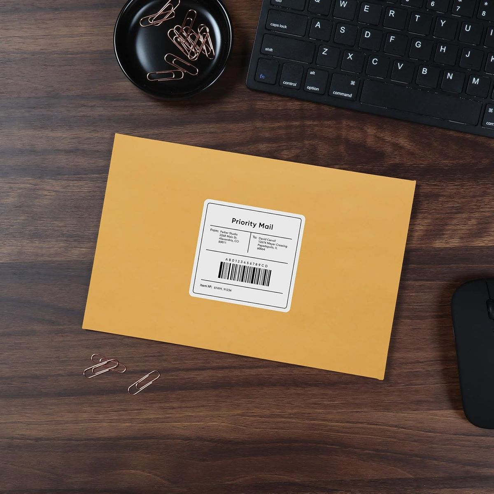

Paper Carry Bags
Perfect for retail stores, boutiques, and showrooms.
Strong paper for secure handling
Flat and twisted handle options
Available in various sizes and paper qualities
Strong paper for secure handling
Flat and twisted handle options
Available in various sizes and paper qualities

Kraft Paper Bags
Made from high-quality kraft paper for durability and sustainability.
Natural brown and white kraft options
Tear-resistant and reusable
Suitable for groceries, food outlets, and retail
Natural brown and white kraft options
Tear-resistant and reusable
Suitable for groceries, food outlets, and retail

Shopping Bags
Designed for daily retail and shopping use.
Lightweight yet strong
Comfortable to carry
Ideal for clothing, accessories, and general merchandise
Lightweight yet strong
Comfortable to carry
Ideal for clothing, accessories, and general merchandise

Food Packaging Paper Bags
Suitable for restaurants, bakeries, cafés, and takeaway services.
Food-safe paper material
Grease-resistant options available
Ideal for dry food, bakery items, and takeaway packaging
Food-safe paper material
Grease-resistant options available
Ideal for dry food, bakery items, and takeaway packaging

Customized & Printed Paper Bags
Enhance brand visibility with custom-designed bags.
Logo and brand printing
Custom sizes and handle styles
Bulk production for businesses and events
Logo and brand printing
Custom sizes and handle styles
Bulk production for businesses and events

Plain Envelopes
Plain envelopes are ideal for daily office and personal correspondence. Made from smooth, high-quality paper, they provide a neat and professional appearance while safely holding letters, documents, and invoices.
Clean finish for professional use
Suitable for letters, notices, and paperwork
Available in multiple standard sizes
Clean finish for professional use
Suitable for letters, notices, and paperwork
Available in multiple standard sizes

Kraft / Brown Envelopes
Kraft envelopes are designed for strength and durability, making them suitable for heavier documents and files. Their sturdy paper construction ensures protection during handling and transport.
Tear-resistant and long-lasting
Ideal for documents, files, and certificates
Widely used in offices and institutions
Tear-resistant and long-lasting
Ideal for documents, files, and certificates
Widely used in offices and institutions

Window envelopes
Window envelopes feature a transparent address window, allowing recipient details to show through. They are commonly used for billing, statements, and official communication, helping save time and improve accuracy.
Transparent window for easy addressing
Professional and efficient mailing solution
Ideal for bulk office use
Transparent window for easy addressing
Professional and efficient mailing solution
Ideal for bulk office use

Courier Envelopes
Courier envelopes are designed for safe and secure delivery of documents. Made from durable materials, they protect contents during transit and are suitable for courier and logistics services.
Strong construction for secure transport
Protects documents from damage
Suitable for courier, postal, and business use
Strong construction for secure transport
Protects documents from damage
Suitable for courier, postal, and business use